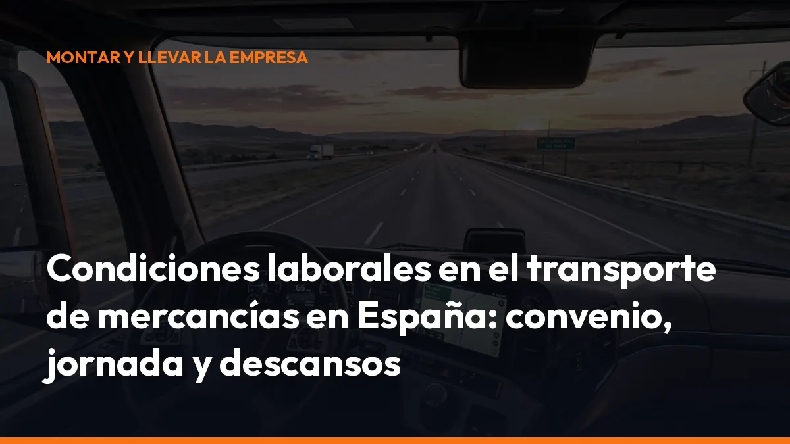

Condiciones laborales en el transporte de mercancías en España: convenio, jornada y descansos

En 2026, el cumplimiento laboral también forma parte del transport compliance. Jornada, descansos, registro horario, dietas, prevención y documentación deben estar correctamente organizados.
Un error en cualquiera de estos puntos puede provocar reclamaciones salariales, sanciones, conflictos con los conductores o problemas durante una inspección.
En esta guía encontrarás las claves del convenio colectivo de transporte de mercancías por carretera y las obligaciones laborales que debes revisar en tu empresa.
Aviso: las condiciones económicas y algunos detalles de jornada dependen del convenio provincial, autonómico o de empresa aplicable. Utiliza esta información como guía general y comprueba siempre el convenio vigente en tu territorio.
¿Qué convenio colectivo se aplica al transporte de mercancías
por carretera?
No existe un único convenio con todas las condiciones laborales del sector.
En España se aplica una combinación de:
- Estatuto de los Trabajadores, como norma laboral general.
- II Acuerdo general para las empresas de transporte de mercancías por carretera, publicado en el BOE.
- Convenios provinciales o autonómicos del transporte de mercancías, logística y actividades auxiliares.
- Convenios de empresa, cuando corresponda.
El II Acuerdo general establece el marco sectorial y actúa como norma supletoria cuando el convenio territorial no regula una materia concreta. Sin embargo, para conocer tu salario, jornada anual, dietas o pluses debes identificar primero el convenio que corresponde a tu empresa.
Comprueba estos datos antes de organizar la plantilla
- Ámbito territorial: provincia o comunidad autónoma donde se encuentra el centro de trabajo.
- Actividad principal: transporte público de mercancías, logística, mensajería, distribución u otra.
- Categoría profesional: conductor mecánico, conductor, operador de tráfico, mozo o personal administrativo.
- Vigencia: revisa si el convenio está actualizado, denunciado o prorrogado.
- Tablas salariales: comprueba las cuantías aplicables en 2026.
El Estatuto de los Trabajadores establece que los convenios colectivos obligan a las empresas y trabajadores incluidos en su ámbito de aplicación.
Jornada laboral en el transporte de mercancías
La referencia general del sector es una jornada de 40 horas semanales de trabajo efectivo de promedio en cómputo anual.
El convenio aplicable puede fijar una jornada anual concreta. En diferentes territorios es habitual encontrar cifras próximas a 1.700-1.826 horas anuales, aunque debes consultar el texto exacto que corresponda a tu empresa.
El II Acuerdo general establece, con carácter general:
- Jornada ordinaria: 40 horas semanales de promedio anual.
- Distribución: puede ser irregular si lo prevé el convenio o existe acuerdo válido.
- Límite diario habitual: 10 horas de trabajo efectivo, salvo regulación específica que respete los descansos legales.
- Calendario laboral: debe elaborarse cada año y estar disponible para la plantilla.
La jornada laboral no equivale únicamente al tiempo que el conductor pasa al volante. También puede incluir:
- Conducción.
- Carga y descarga.
- Repostaje.
- Tareas de mantenimiento.
- Preparación de la documentación.
- Acondicionamiento y protección de la mercancía.
- Otras tareas relacionadas con el servicio.
Tiempo de trabajo efectivo y tiempo de presencia
En el transporte por carretera debes separar dos conceptos.
Trabajo efectivo
Es el tiempo durante el cual el trabajador está realizando su actividad o permanece a disposición de la empresa para ejecutar tareas relacionadas con el vehículo, la carga o el servicio.
Por ejemplo:
- Conducción.
- Carga y descarga cuando no se conoce la duración de la espera.
- Revisión del vehículo.
- Tareas auxiliares.
- Gestión de incidencias durante la ruta.
Tiempo de presencia
Es el periodo en el que el trabajador está disponible para la empresa, pero no realiza trabajo efectivo.
Puede incluir:
- Esperas conocidas previamente.
- Determinados tiempos en frontera.
- Acompañamiento del vehículo en barco o tren.
- Disponibilidad para reanudar la conducción.
El Real Decreto 1561/1995 establece que el tiempo de presencia no puede superar, con carácter general, 20 horas semanales de promedio en el periodo de referencia aplicable.
Aunque no sea trabajo efectivo, el tiempo de presencia debe registrarse y retribuirse o compensarse según el convenio correspondiente.
Límites de tiempo de trabajo para conductores móviles
Para los trabajadores móviles, el tiempo de trabajo efectivo no puede superar:
- 48 horas semanales de promedio en el periodo de referencia.
- 60 horas en una semana concreta, incluyendo las horas extraordinarias.
- 10 horas de trabajo en un periodo de 24 horas cuando exista trabajo nocturno en los supuestos previstos legalmente.
El límite de 48 horas no sustituye a la jornada anual del convenio. Debes cumplir ambas referencias al mismo tiempo.
Por eso es importante comparar el calendario laboral con los datos reales de actividad. Si el cuadrante marca una jornada correcta, pero el registro refleja prolongaciones habituales, la empresa puede tener un problema.
Tiempos de conducción, pausas y descansos
Los tiempos de conducción se regulan principalmente por el Reglamento (CE) 561/2006.
Los límites principales son:
- Conducción diaria: máximo de 9 horas.
- Ampliación diaria: hasta 10 horas, como máximo, dos veces por semana.
- Conducción semanal: máximo de 56 horas.
- Dos semanas consecutivas: máximo de 90 horas.
- Pausa de conducción: 45 minutos después de 4 horas y 30 minutos de conducción.
- Pausa fraccionada: 15 minutos más 30 minutos, en ese orden.
- Descanso diario normal: 11 horas.
- Descanso diario reducido: mínimo de 9 horas, dentro de los límites permitidos.
- Descanso semanal normal: 45 horas.
- Descanso semanal reducido: mínimo de 24 horas, con compensación posterior.
Estos límites de conducción no son idénticos a la jornada laboral. Un conductor puede estar trabajando sin conducir, por ejemplo durante una carga, una descarga o una revisión documental.
No confundas el tacógrafo con el registro laboral
El tacógrafo es esencial para controlar la conducción, las pausas y los descansos. Pero la empresa también debe poder acreditar el conjunto del tiempo de trabajo.
En la práctica, debes contrastar:
- Datos del tacógrafo.
- Registro diario de jornada.
- Partes de trabajo.
- Cuadrantes.
- Nóminas.
- Horas extraordinarias.
- Tiempos de carga y descarga.
- Periodos de disponibilidad.
La información debe ser coherente. Si el tacógrafo indica descanso, pero existen partes de trabajo o comunicaciones que demuestran actividad, la Inspección puede pedir explicaciones.
Registro de jornada digital: qué debes conservar en 2026
El artículo 34.9 del Estatuto de los Trabajadores obliga a registrar diariamente la jornada, incluyendo la hora concreta de inicio y finalización.
La empresa debe:
- Registrar cada jornada: de todas las personas trabajadoras.
- Conservar los registros: durante un mínimo de 4 años.
- Facilitar el acceso: a los trabajadores, sus representantes y la Inspección de Trabajo.
- Mantener un sistema fiable: objetivo, accesible y coherente con la actividad real.
- Registrar las horas extraordinarias: cuando se produzcan.
La ley no obliga siempre a utilizar una aplicación concreta. Sin embargo, un sistema digital facilita el control cuando los conductores trabajan en distintas rutas, centros o provincias.
Una solución digital permite centralizar la documentación, evitar papeles dispersos y localizar rápidamente un documento durante una inspección.
Dietas, gastos y pluses en el transporte
Las dietas compensan los gastos ocasionados por desplazamientos de trabajo. No son, por regla general, salario, sino percepciones extrasalariales.
El II Acuerdo general contempla como referencia:
- Almuerzo: 35 % de la dieta.
- Cena: 25 %.
- Pernoctación: 30 %.
- Desayuno: 10 %.
El convenio provincial o autonómico puede establecer importes diferentes y concretar cuándo nace el derecho a cobrar cada dieta.
También debes revisar los complementos salariales que pueden aparecer en el convenio:
- Plus de nocturnidad: normalmente vinculado al trabajo realizado entre las 22:00 y las 06:00.
- Plus de festivo.
- Plus de peligrosidad o penosidad.
- Plus de turnicidad.
- Plus de disponibilidad.
- Plus de transporte o asistencia.
- Horas extraordinarias.
- Complementos de antigüedad.
No pagues dietas y pluses de forma automática sin comprobar el convenio. Define cuándo se generan, cómo se justifican y cómo aparecen en la nómina.
Prevención de riesgos laborales en el transporte
La Ley 31/1995 de Prevención de Riesgos Laborales obliga a integrar la prevención en la gestión diaria de la empresa.
En el transporte de mercancías, debes prestar especial atención a:
- Fatiga y somnolencia: planifica rutas realistas y respeta los descansos.
- Carga y descarga: forma al personal y entrega los equipos adecuados.
- Estiba: establece procedimientos para evitar desplazamientos de la mercancía.
- Riesgos ergonómicos: controla la manipulación manual de cargas.
- Mercancías peligrosas: aplica los procedimientos ADR correspondientes.
- Trabajo en carretera: contempla atropellos, tráfico, climatología y zonas de carga.
- Emergencias: define cómo actuar ante accidentes, derrames o averías.
- Equipos de protección: proporciona chaleco, calzado, guantes y otros EPIs necesarios.
- Formación: imparte formación suficiente al incorporarse y cuando cambien las funciones o los equipos.
La empresa debe conservar el plan de prevención, la evaluación de riesgos, la planificación preventiva, la formación y la documentación de vigilancia de la salud.
¿Qué puede revisar la Inspección de Trabajo en 2026?
Durante una actuación inspectora, prepara una carpeta laboral completa y actualizada.
La Inspección puede solicitar:
1. Convenio aplicable: texto vigente y tablas salariales. 2. Contratos: categoría, jornada, funciones y centro de trabajo. 3. Calendario laboral: planificación anual y distribución horaria. 4. Registro de jornada: inicio, final, horas extraordinarias y disponibilidad. 5. Datos del tacógrafo: conducción, otros trabajos, pausas y descansos. 6. Cuadrantes y partes: deben coincidir con la actividad real. 7. Nóminas: salario base, dietas, pluses y horas extra. 8. Vacaciones y permisos: planificación y disfrute. 9. Prevención: evaluación, formación, EPIs y vigilancia de la salud. 10. Accidentes e incidencias: investigación y medidas correctoras.
La Inspección de Trabajo tiene funciones de vigilancia y control de la normativa laboral y preventiva. Además, puede requerir la subsanación de deficiencias o proponer sanciones cuando detecte incumplimientos.
Checklist de cumplimiento laboral para tu empresa
Antes de cerrar el mes, comprueba:
- Tienes identificado el convenio colectivo correcto.
- Has actualizado las tablas salariales de 2026.
- El calendario laboral está preparado.
- El registro de jornada recoge la actividad real.
- Los datos del tacógrafo se descargan y conservan.
- Se controlan conducción, trabajo efectivo y presencia.
- Las horas extraordinarias están identificadas.
- Las dietas y pluses aparecen correctamente en nómina.
- Los descansos se respetan en la planificación.
- La documentación preventiva está vigente.
- Los conductores disponen de la formación y los EPIs necesarios.
- La documentación de transporte está localizada y disponible.
Simplifica tu documentación de transporte con Mi Carga
El cumplimiento laboral exige control. Pero también exige que puedas encontrar rápidamente la documentación relacionada con cada servicio.
Con Mi Carga puedes crear y gestionar documentación digital de transporte directamente desde el móvil, sin depender de carpetas físicas ni papeles extraviados.
Empieza sin complicaciones
- 10 portes de prueba: sin caducidad.
- Plan mensual: 10 € al mes + IVA.
- Plan anual: 90 € al año + IVA.
- Portes ilimitados: en los planes disponibles.
- Modo sin conexión: para trabajar desde cualquier ruta.
- Trazabilidad ROTT: incluida.
- Cancelación: cuando quieras y sin penalización.
Activa tu suscripción o solicita un presupuesto para tu equipo.
Mi Carga no sustituye al registro laboral, al tacógrafo ni al asesoramiento laboral. Pero sí te ayuda a mantener la documentación operativa más ordenada, accesible y preparada para el día a día del transporte.
Empieza hoy y reduce el tiempo que pierdes buscando documentos en la cabina, la oficina o durante una inspección.
Fuentes consultadas
- II Acuerdo general para las empresas de transporte de mercancías por carretera — BOE
- Estatuto de los Trabajadores — BOE
- Real Decreto 1561/1995 sobre jornadas especiales de trabajo — BOE
- Reglamento (CE) 561/2006 sobre tiempos de conducción y descanso — EUR-Lex
- Ley 31/1995 de Prevención de Riesgos Laborales — BOE
- Convenio colectivo publicado en 2026 como ejemplo de aplicación empresarial — BOE
Genera tus 10 primeros documentos gratis con Mi Carga
DeCA, carta de porte y ADR, en PDF, con QR y archivo automático en la nube.
Empezar con 10 documentos gratisArtículo informativo. Consulta siempre el caso concreto de tu operación. ¿Dudas? Escríbenos.